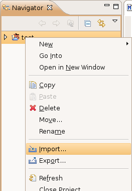
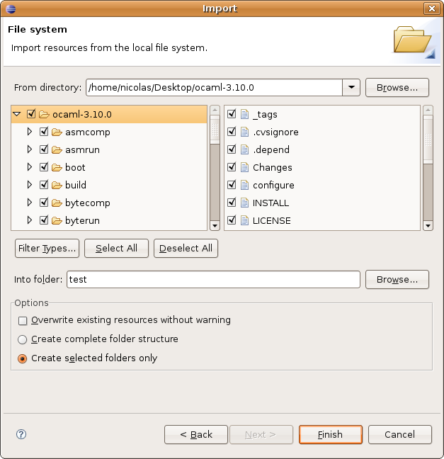

To import an existing OCaml project, first start by creating a new project to import it into (see Creating a new project). If the project you want to import has a Makefile, create an "OCaml Empty Makefile Project". If it doesn't, create an "Ocamlbuild Project" or "OCaml Managed Project".
Then, right-click in the navigator on the project you just created, and select Import...

In the following dialog box, select File System under the General category, and click Next.
Then, you should get the following dialog box:

Check the boxes near the files you want to import, and uncheck those for the files you don't want to import into your project. Then, click Finish.
Finally, to compile your project, see Compiling an OCaml project.